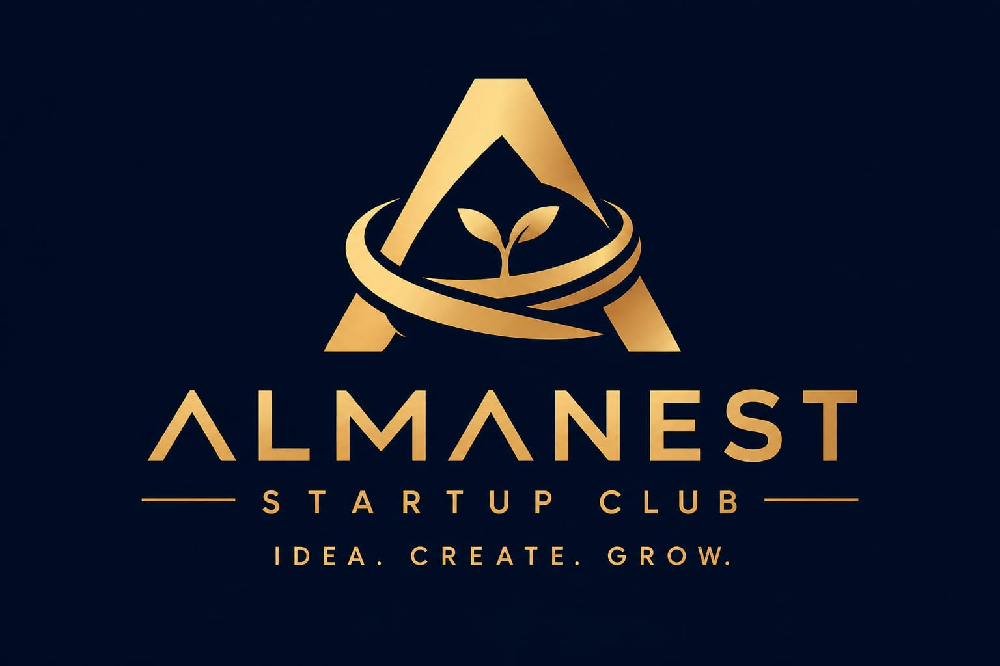
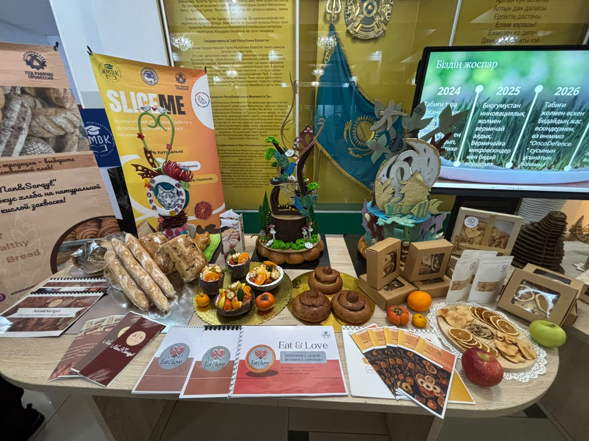

Сингапурлық бағыт: виртуалды симулятор мен стартап-орталықты колледждің бірыңғай экожүйесіне біріктіру
Virtual Business Simulator

Startup Center

Real Business Launch
01 / 06
01 · Идеядан бизнеске
Жобаның мақсаты мен мүмкіндігі
Жобаның мақсаты
Студенттерге кәсіпкерлік негіздерін тәжірибе арқылы меңгерту, яғни бизнес-идеяны іздеуден бастап, оны жүзеге асыру жоспарын әзірлеуге дейінгі толық үдерістен өтуге мүмкіндік беру.
Қосымшаның ерекшелігі
Оқыту үдерісі виртуалды симулятор форматында жүзеге асырылады. Студент бизнес-идеяны таңдайды, мақсатты аудиторияны анықтайды, шығындар мен болжамды кірістерді есептейді, модельденген іскерлік жағдаяттарда шешім қабылдайды және сол шешімдердің нәтижесін көре алады. Мұндай формат әртүрлі тәсілдерді сынап көруге, қателіктерден сабақ алуға және қауіпсіз оқу ортасында тәжірибе жинақтауға мүмкіндік береді.
💡01ИдеяБизнес-идеяны таңдау
🖥️02Виртуалды симуляторШешімдерді қауіпсіз ортада сынау
🌱03Startup CenterТәлімгермен жобаны жетілдіру
🚀04Нақты бизнесЖобаны іске қосуға дайындалу
Студенттер бизнес-идеяның өміршеңдігін бағалауды, қарапайым бизнес-жоспар құруды, қабылдаған шешімдерін негіздеуді және өз жобаларын таныстыруды меңгереді. Сонымен қатар, қосымша оқытушыға кәсіпкерлік пәні бойынша сабақтарды тәжірибеге бағытталған, интерактивті әрі қызықты форматта ұйымдастыруға көмектеседі.
02 / 06
02 · Сингапур тәжірибесі
SMU: Case Study арқылы оқыту
CCX — SMU жанындағы нақты іскерлік жағдайларға сүйенген оқу кейстерін әзірлейтін орталық. Қызметі 2011 жылы басталды, қазіргі атауын 2025 жылғы 1 шілдеде алды. Азия ұйымдарының тәжірибесіне негізделген кейстер студентке мәселені талдауға, баламаларды салыстыруға және шешімін дәлелдеуге көмектеседі.
Негіз: «Идеядан бизнеске» жобасының сайты және пайдаланушы ұсынған «Видеомен презентация — MANAGER CITY және 2 видео.html» материалы. Сингапур мен Малайзия таныстырылымының нақты күні мен орны бұл материалдарда көрсетілмеген.
04 / 06
04 · Бизнес тренажердің өзегі
Қаладағы әр ғимарат — бір шешім
Нарық зертханасыИдея, клиент, сұраныс пен бағаны зерттеп, кәсіпкер паспортын дайындайды.
Шешімдер зертханасы9 бөлікті бизнес модель канвасын толтырып, бюджет пен маркетингті жоспарлайды.
Таңдау және дәлелҮш шешімді салыстырып, тиімдісін есеп пен уәжге сүйеніп қорғайды.
 Virtual Business Simulator
Virtual Business Simulator AWS
AWS Accenture
Accenture Google
Google KPMG
KPMG UBS
UBS Citibank
Citibank Dell Technologies
Dell Technologies Salesforce
Salesforce SAP
SAP Kajima
Kajima СИНГАПУР
СИНГАПУР